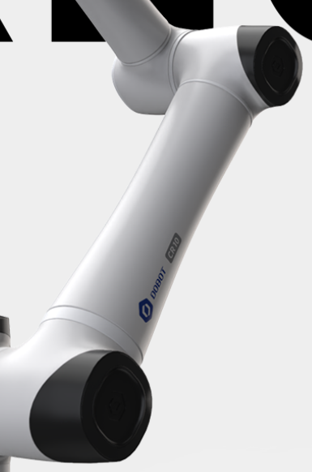
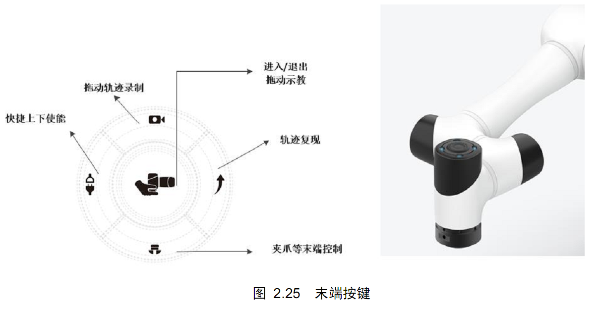
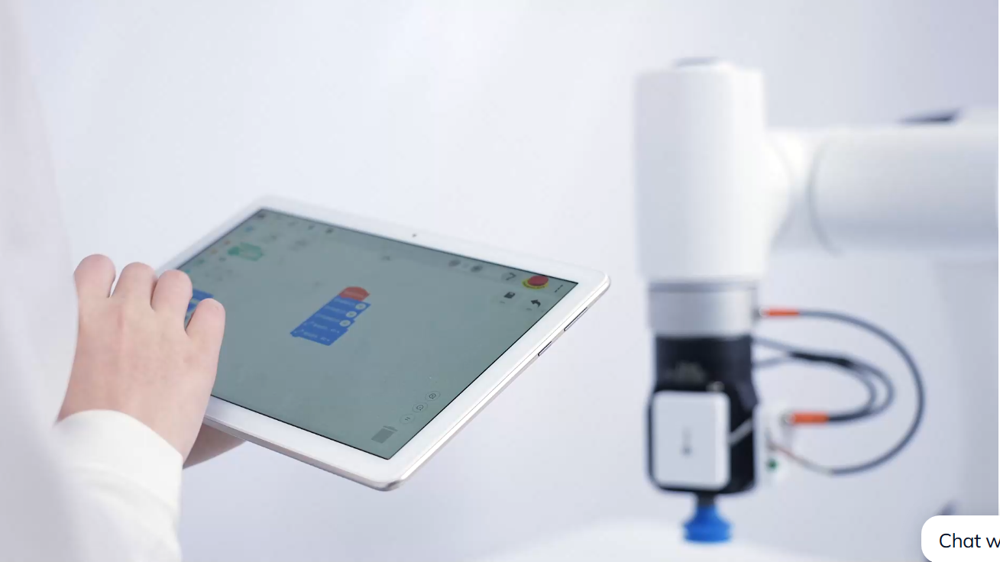
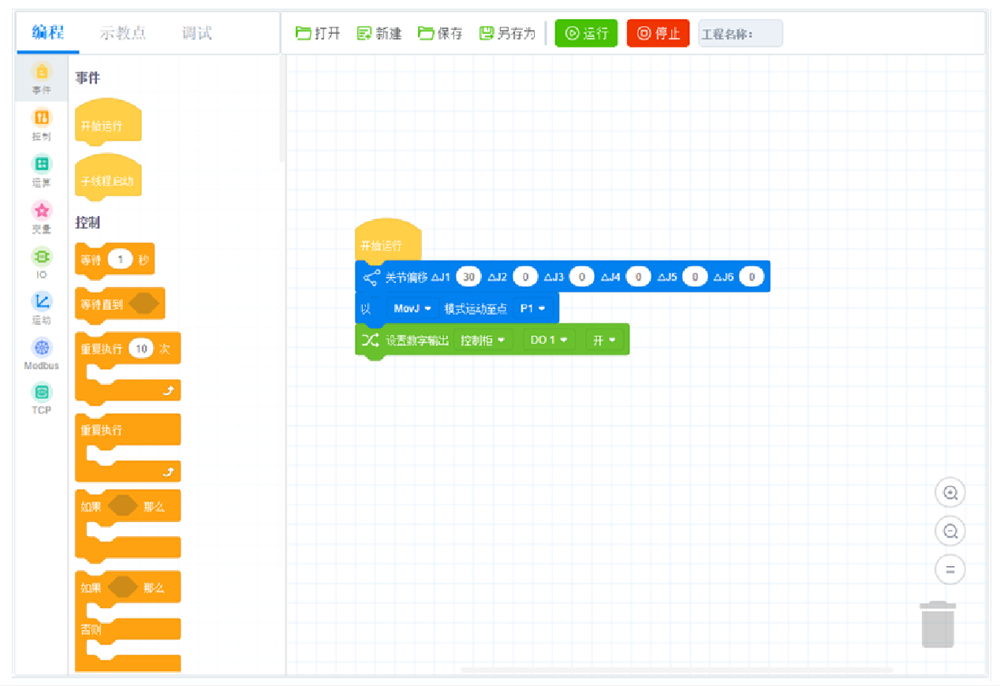
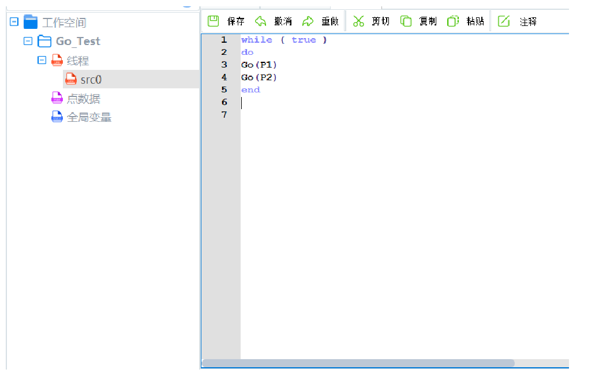
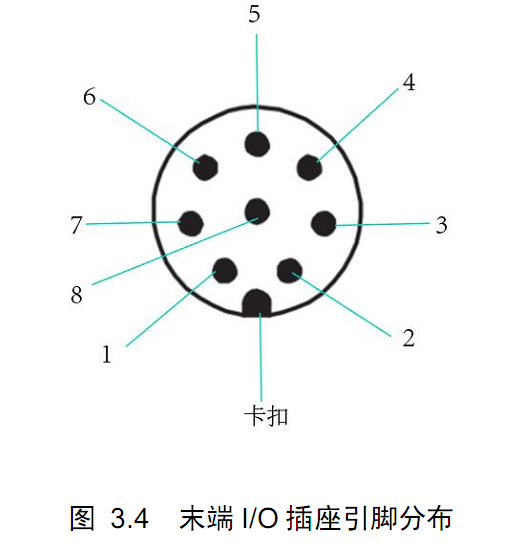
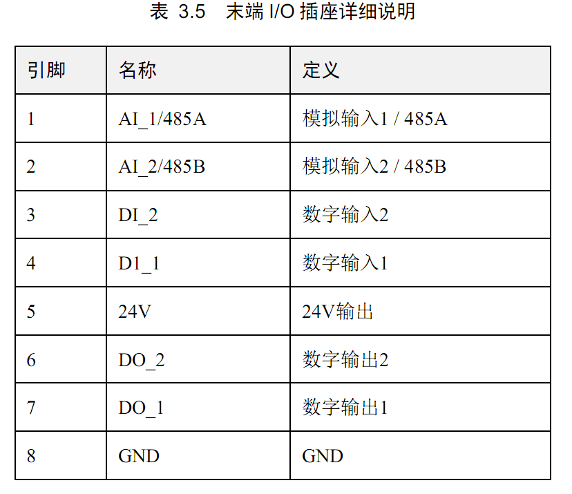
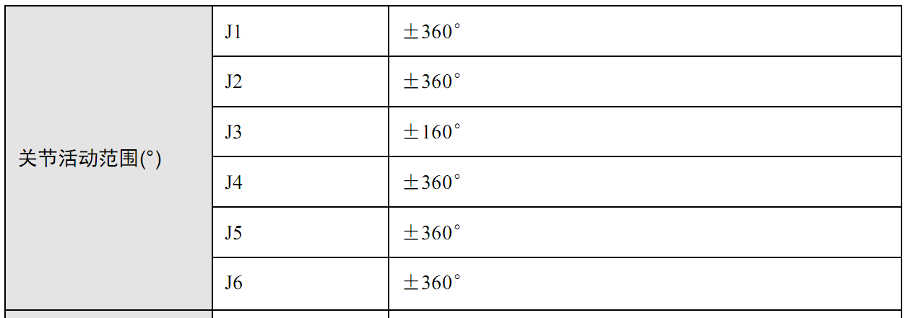

先从软硬件上说下优点： 1. 管壁是沙漏型，会显得机器人比较轻巧，视觉上更好看。

2. 在第5轴的顶盖处设有5个按键和指示灯，可以在没有界面的情况下进行机器人的控制。(部分按键功能我还没搞明白，试了好几次也没成功。)
3. 示教器采用的Android平板，下载好CR-APP后通过无线wifi方式连接到机器人控制器，减少了连线并且任何android系统都可用来当示教器，客户可以节省部分成本。（当然这种方式也有很大的缺点-经常断开连接，会导致安全故障。）
4. 图形化编程是用的Blockly,指令/角本解释器是采用的Lua，两者都是开源的，编程人员可以更快的适应。 
5. 末端Tool IO中的AI可以复用为RS485，这样就可以和很多电动夹具进行通信，一是节约IO，二是布线更简洁方便。 
6. 拖动功能比UR 1代要好，力感知灵敏度较高。上电使能后不用homing就可以运行程序，估计编码器可以记录位置，不用像UR 1代那样要先每个轴转动找零点。--------------------------------------------------------------------------------------------
缺点有：
1. 无论是Android平板上的app(Dobot CRStudio)还是电脑端软件(DobotSCStudio)，都有多处bug，比如无线连接经常断开，会导致安全故障；工具坐标和用户坐标无法正常创建，或者创建后没有实际效果（可能是我还没有搞懂如何使用）；部分输入框无法输入小数，有些按键按下、选择框更改选项后不生效；
2. 无论是硬件说明书还是软件使用手册，极其简单，估计是工程师写的，电气/机械尺寸参数好多缺失，编程部分更是基本没有，函数只给函数名，参数如何使用全靠自己猜。这是国产机器人的通病，所以导致国内厂家需要很多人去给客户编程，浪费大量人力。
3. 由于关节后盖相比UR的要长，各关节的转动实际不是360度的，有多次测试，第5关节的后盖会碰撞到upper arm，猜测是建模时没有考虑到实际关节长度。
